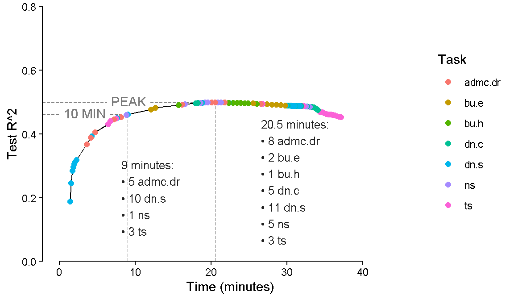
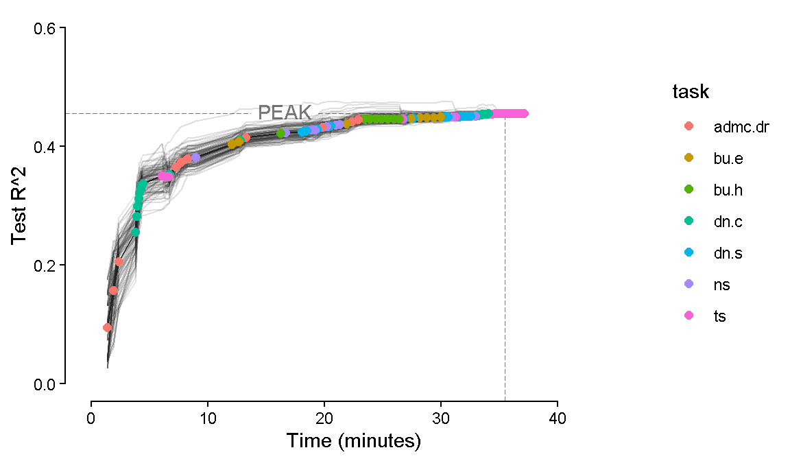

Code
library(tidyverse)Search Algorithm
Jessica Helmer
February 12, 2026
dn_dat_c <- readRDS(here::here("Data", "Denominator Neglect", "dn_dat_c.rds"))
bu_dat_h <- readRDS(here::here("Data", "Bayesian Update", "bu_dat_h.rds"))
admc.dr_dat <- readRDS(here::here("Data", "ADMC Decision Rules", "admc.dr_dat.rds"))
ns_dat <- readRDS(here::here("Data", "Number Series", "ns_dat.rds"))
dn_dat_s <- readRDS(here::here("Data", "Denominator Neglect", "dn_dat_s.rds"))
bu_dat_e <- readRDS(here::here("Data", "Bayesian Update", "bu_dat_e.rds"))
ts_dat <- readRDS(here::here("Data", "Time Series", "ts_dat.rds"))
dn_top_items_c <- readRDS(here::here("Data", "Denominator Neglect", "top_items.rds"))
dn_top_items_s <- readRDS(here::here("Data", "Denominator Neglect", "top_items_s.rds"))
startup_costs <- readRDS(here::here("Data", "startup_costs.rds"))dn_dat_c <- dn_dat_c |>
left_join(dn_top_items_c |>
pivot_longer(c(conf_item, harm_item),
names_to = "choice_type", values_to = "item") |>
select(item, rank),
by = "item") |>
mutate(task = "dn.c",
item = paste0(task, "_", rank),
# still need time per item
time = (3.43 - get_startup(first(task))) /
(length(unique(item)) * 2),
score = correct,
.keep = "unused") |>
select(subject_id, sscore, task, item, score, time)
dn_dat_s <- dn_dat_s |>
left_join(dn_top_items_s |>
pivot_longer(c(conf_item, harm_item),
names_to = "choice_type", values_to = "item") |>
select(item, rank),
by = "item") |>
mutate(task = "dn.s",
item = paste0(task, "_", rank),
# still need time per item
time = (4.45 - get_startup(first(task))) /
(length(unique(item)) * 2),
score = correct,
.keep = "unused") |>
select(subject_id, sscore, task, item, score, time)bu_dat_h <- bu_dat_h |>
mutate(task = "bu.h",
item = paste0(task, "_", unique_trial),
time = (6.56 - get_startup(first(task))) /
(length(unique(item))),
.keep = "unused") |>
select(subject_id, sscore, task, item, score, time)
bu_dat_e <- bu_dat_e |>
mutate(task = "bu.e",
item = paste0(task, "_", unique_trial),
time = (7.26 - get_startup(first(task))) /
(length(unique(item))),
.keep = "unused") |>
select(subject_id, sscore, task, item, score, time)The FPT Version 5 includes five cognitive tasks.
Denominator Neglect: Combined
Bayesian Update: Hard
ADMC: Decision Rules
Number Series
Coherence Forecasting Test
Matrix Reasoning
Denominator Neglect: Separate
Bayesian Update: Easy
I don’t know what to do with the CFT as of now, so this will only have Denominator Neglect: Combined, Bayesian Update: Hard, ADMC: Decision Rules, Number Series.
I also don’t know what to do with Raven.
Going to add Time Series as well!
This algorithm seeks to maximize the \(R^2\) of predicting s-scores per minute for a set of cognitive task items of average testing time t.
test <- data.frame(rep = 0,
task = "INIT",
item = "INIT",
test_r2 = 0,
time = 0,
added_r2 = 0,
added_time = 0,
r2_rate = 0)
walk(seq(1, v5_dat |> pull(item) |> unique() |> length()),
\(i) {test <<- v5_dat |>
filter(!(item %in% pull(test, item))) |>
pull(item) |>
unique() |>
map(~ rbind(v5_dat |>
filter(item == .x),
v5_dat |>
filter(item %in% pull(test, item))) |>
summarize(.by = c(task, subject_id),
score = mean(score),
sscore = first(sscore),
time = sum(time),
task = first(task)) |>
mutate(time = time + map_dbl(task, get_startup)) |>
mutate(.by = subject_id,
time = sum(time)) |>
mutate(formula = paste("sscore ~", task |> unique() |> paste(collapse = "+"))) |>
pivot_wider(names_from = task, values_from = score) |>
summarize(rep = i,
task = str_split_i(.x, "_", 1),
item = .x,
test_r2 = summary(lm(as.formula(first(formula)),
data = pick(everything())))$r.squared,
added_r2 = first(test_r2) - test |>
head(1) |>
pull(test_r2),
added_time = first(time) - test |>
head(1) |>
pull(time),
time = first(time),
r2_rate = first(added_r2 / added_time))) |>
list_rbind() |>
filter(r2_rate == max(r2_rate)) |>
rbind(test) |>
filter(item != "INIT")},
.progress = T)
test
saveRDS(test, here::here("Data", "Search Algorithms", "v5test_dat.rds"))v5test_plt <- test |>
ggplot(aes(x = time, y = test_r2)) +
geomtextpath::geom_textsegment(data = test |> filter(time < 10.49) |> filter(time == max(time)),
aes(x = -Inf, xend = time, y = test_r2, yend = test_r2, label = "10 MIN"),
color = scales::col_lighter("#202020", amount = 35), linewidth = .3, linetype = "longdash") +
geom_segment(data = test |> filter(time < 10.49) |> filter(time == max(time)),
aes(y = -Inf, yend = test_r2, x = time),
color = scales::col_lighter("#202020", amount = 35), linewidth = .3, linetype = "longdash") +
geomtextpath::geom_textsegment(data = filter(test, test_r2 == max(test_r2)),
aes(x = -Inf, xend = time, y = test_r2, yend = test_r2, label = "PEAK"),
color = scales::col_lighter("#202020", amount = 35), linewidth = .3, linetype = "longdash") +
geom_segment(data = filter(test, test_r2 == max(test_r2)),
aes(y = -Inf, yend = test_r2, x = time),
color = scales::col_lighter("#202020", amount = 35), linewidth = .3, linetype = "longdash") +
geom_line() +
geom_point(aes(color = task), size = 2) +
annotate("text", label = paste0(test |>
filter(time < 10.49) |> filter(test_r2 == max(test_r2)) |>
pull(time) |> round(1),
" minutes:\n• ",
test |> filter(time < 10.49) |>
count(task) |>
pmap_chr(\(task, n) paste(n, task)) |>
paste(collapse = "\n• ")),
x = 8.2, y = 0.2, size = 3.4, hjust = "left", color = "#202020") +
annotate("text", label = paste0(filter(test, test_r2 == max(test_r2)) |>
pull(time) |> round(1), " minutes:\n• ",
test |>
filter(time <= filter(test, test_r2 == max(test_r2)) |>
pull(time)) |>
count(task) |>
pmap_chr(\(task, n) paste(n, task)) |>
paste(collapse = "\n• ")),
x = 26.6, y = 0.25, size = 3.4, hjust = "left", color = "#202020") +
coord_cartesian(xlim = c(0, 45), ylim = c(0, 0.8), expand = c(0, 1)) +
guides(x = guide_axis(cap = "both"),
y = guide_axis(cap = "both")) +
labs(x = "Time (minutes)", y = "Test R^2", color = "Task") +
theme_classic() +
theme(
panel.background = element_rect(fill='transparent'),
plot.background = element_rect(fill='transparent', color=NA),
panel.grid.major = element_blank(),
panel.grid.minor = element_blank(),
legend.background = element_blank())
saveRDS(v5test_plt, here::here("Figures", "Search Algorithms", "v5test_plt.rds"))
v5test_plt 
As info, this still does not have any within-task difference in item time. Currently (total time from paper - startup time) / number of items.
test_random <- data.frame(rep = 0,
iter = 0,
task = "INIT",
item = "INIT",
test_r2 = 0,
time = 0,
added_r2 = 0,
added_time = 0,
r2_rate = 0)
walk(1:100,
~ {test_iter <- data.frame(rep = 0,
iter = 0,
task = "INIT",
item = "INIT",
test_r2 = 0,
time = 0,
added_r2 = 0,
added_time = 0,
r2_rate = 0)
test |>
arrange(rep) |>
select(cur_rep = rep, cur_task = task) |>
pwalk(\(cur_rep, cur_task) {
random_item <- v5_dat |>
filter(task == cur_task & !(item %in% pull(test_iter, item))) |>
pull(item) |>
unique() |>
sample(1)
test_iter <<- rbind(v5_dat |>
filter(item == random_item),
v5_dat |>
filter(item %in% pull(test_iter, item))) |>
summarize(.by = c(task, subject_id),
score = mean(score),
sscore = first(sscore),
time = sum(time),
task = first(task)) |>
mutate(time = time + map_dbl(task, get_startup)) |>
mutate(.by = subject_id,
time = sum(time)) |>
mutate(formula = paste("sscore ~", task |> unique() |> paste(collapse = "+"))) |>
pivot_wider(names_from = task, values_from = score) |>
summarize(iter = .x,
rep = cur_rep,
task = cur_task,
item = random_item,
test_r2 = summary(lm(as.formula(first(formula)),
data = pick(everything())))$r.squared,
added_r2 = first(test_r2) - test_iter |>
head(1) |>
pull(test_r2),
added_time = first(time) - test_iter |>
head(1) |>
pull(time),
time = first(time),
r2_rate = first(added_r2 / added_time)) |>
rbind(test_iter) |>
filter(item != "INIT")
})
test_random <<- rbind(test_random, test_iter) |>
filter(item != "INIT")},
.progress = T)
saveRDS(test_random, here::here("Data", "Search Algorithms", "v5test-random_dat.rds"))v5test_random_plt <- test_random |>
ggplot(aes(x = time, y = test_r2)) +
geomtextpath::geom_textsegment(
data = filter(test_random |>
summarize(.by = time,
test_r2 = mean(test_r2),
task = first(task)),
test_r2 == max(test_r2)),
aes(x = -Inf, xend = time, y = test_r2, yend = test_r2, label = "PEAK"),
color = scales::col_lighter("#202020", amount = 35), linewidth = .3, linetype = "longdash") +
geom_segment(
data = filter(test_random |>
summarize(.by = time,
test_r2 = mean(test_r2),
task = first(task)),
test_r2 == max(test_r2)),
aes(y = -Inf, yend = test_r2, x = time),
color = scales::col_lighter("#202020", amount = 35), linewidth = .3, linetype = "longdash") +
geom_line(aes(group = iter), alpha = .14, linewidth = .4,
color = "#202020") +
geom_line(data = test_random |> summarize(.by = time,
test_r2 = mean(test_r2)),
aes(x = time, y = test_r2), color = "#202020") +
geom_point(data = test_random |> summarize(.by = time,
test_r2 = mean(test_r2),
task = first(task)),
aes(x = time, y = test_r2, color = task),
size = 2) +
guides(x = guide_axis(cap = "both"),
y = guide_axis(cap = "both")) +
labs(x = "Time (minutes)", y = "Test R^2") +
coord_cartesian(ylim = c(0, 0.6), xlim = c(0, 45)) +
theme_classic() +
theme(
panel.background = element_rect(fill='transparent'),
plot.background = element_rect(fill='transparent', color=NA),
panel.grid.major = element_blank(),
panel.grid.minor = element_blank(),
legend.background = element_blank())
saveRDS(v5test_random_plt, here::here("Figures", "Search Algorithms", "v5test_random_plt.rds"))
v5test_random_plt
Idea: what if as a robustness check we rerun the search alg making its first item be from a specific task. Nowhere close to all possible combinations, but might be something.
test <- data.frame(first_task = "INIT",
rep = 0,
task = "INIT",
item = "INIT",
test_r2 = 0,
time = 0,
added_r2 = 0,
added_time = 0,
r2_rate = 0)
v5_dat |> pull(task) |> unique() |>
walk(\(first_task) {
print(first_task)
walk(seq(1, v5_dat |> pull(item) |> unique() |> length()),
\(i) {test <<- v5_dat |>
filter(!(item %in% pull(test, item))) |>
filter((i == 1 & task == first_task) | i > 1) |>
pull(item) |>
unique() |>
map(~ rbind(v5_dat |>
filter(item == .x),
v5_dat |>
filter(item %in% pull(test, item))) |>
summarize(.by = c(task, subject_id),
score = mean(score),
sscore = first(sscore),
time = sum(time),
task = first(task)) |>
mutate(time = time + map_dbl(task, get_startup)) |>
mutate(.by = subject_id,
time = sum(time)) |>
mutate(formula = paste("sscore ~", task |> unique() |> paste(collapse = "+"))) |>
pivot_wider(names_from = task, values_from = score) |>
summarize(first_task = first_task,
rep = i,
task = str_split_i(.x, "_", 1),
item = .x,
test_r2 = summary(lm(as.formula(first(formula)),
data = pick(everything())))$r.squared,
added_r2 = first(test_r2) - test |>
head(1) |>
pull(test_r2),
added_time = first(time) - test |>
head(1) |>
pull(time),
time = first(time),
r2_rate = first(added_r2 / added_time))) |>
list_rbind() |>
filter(r2_rate == max(r2_rate)) |>
rbind(test) |>
filter(item != "INIT")},
.progress = T)
saveRDS(test, here::here("Data", "Search Algorithms", paste0("v5test_first-", first_task, "_dat.rds")))
})